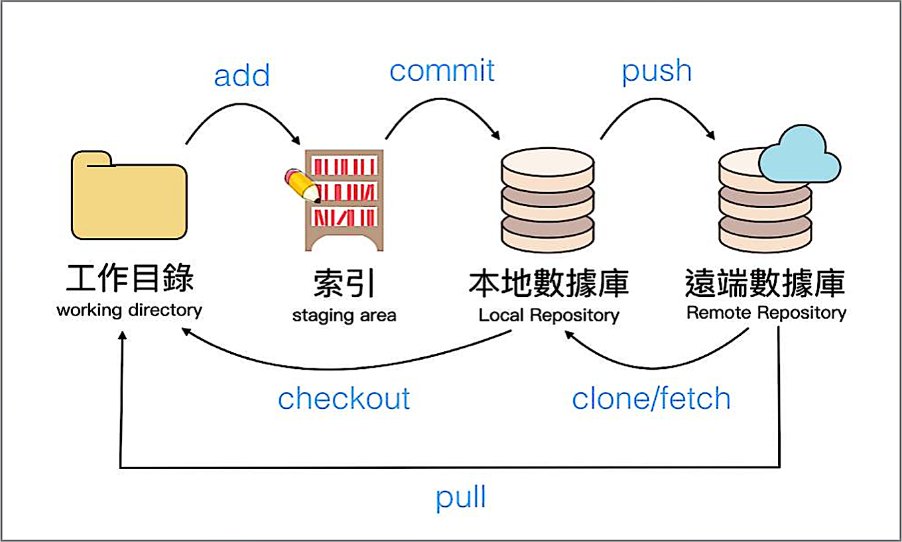

Git安裝(一個分散式版本控制軟體)
Github會員(支援git程式碼存取 & 遠端託管repository的平台)(同類型有bitbucket、gitlab )
Sourcetree安裝
cd /c/Users/FURECOOL/Desktop/project
git init(開啟新的數據庫)
git --version
git config --global user.name "furecool"
git config --global user.email “furecool@gmail.com”
git config --list (按q跳出)
git config --global alias.st status (縮寫設定)
git status (目前狀態)
git add . (檔案加入到索引)
git commit -m "新增HTML環境" (加入此版本到本地數據庫)
git log (觀看目前更新的版本)

git remote add origin https://github.com/furecool/project-1.git
(origin: 預設的遠端數據庫名字(位置) )
(https://github.com/furecool/project-1.git: 遠端數據庫的網址 )
git push -u origin master (-u可不加)
Git remote –v (可察看遠端數據庫的位置和網址)
Master:預設分支名稱
Head:我現在的位置
git branch develop(分支名稱)
git checkout develop
git checkout master
git merge develop (將master合併到develop，快轉:只有一條直線)
git merge develop --no-ff (沒有快轉)
:q! ENTER (跳出)
git reflog(查看紀錄，可看到已刪除的版本編號，藉此還原)
git checkout ed89a6f(head前往版本編號/分支/版本名稱)( develop / master)
git reset HEAD^ (head & 分支名稱(master)一起回退1次)
git reset HEAD^ --hard(檔案不要留了)
git reset C6(把分支移到某版本，跟checkout比較多了復原的意思，已刪除也可加--hard即可復原)
先fork到自己的空間
git clone <版本庫的網址> <本機資料夾>
做完變更後push上去
git fetch <遠端主機名> //這個命令將某個遠端主機的更新全部取回本地 git fetch <遠端主機名> <分支名> //注意之間有空格 git fetch origin master git log -p FETCH_HEAD
(pull = fetch + merge ) git pull origin master
| 指令 (Windows/ Mac OS / Linux) | 描述 | 例子 |
|---|---|---|
| exit | 關閉視窗 | exit |
| cd | 修改資料夾 | cd test |
| dir / ls | 條列資料檔案路徑 | dir |
| copy / cp | 複製檔案 |
copy c:\test\test.txt c:\windows\test.txt |
| move / mv | 移動檔案 |
move c:\test\test.txt c:\windows\test.txt |
| mkdir | 新建目錄 | mkdir testdirectory |
| rd/del / rm | 刪除目錄/檔案 | del c:\test\test.txt |
| touch | 新增檔案 | touch index.html |
| pwd | 取得目前位置 |